Coop
Designer and developer from Interactive Arts & Technology at SFU. I build apps, design sound and train machine-learning models.
Open to entry-level roles · Lower Mainland, BC or remote
The parts
4 projects · 4 directionsStarring: Sound design, Unreal MetaSounds, Blender
A physics-driven VR escape room where you play a robot courier in an abandoned 2055 factory, and the world scales 1,000× around you.
See the partStarring: YOLOv8, PyTorch, Roboflow
A YOLOv8 model built, audited and tuned to detect Canadian traffic signs that European-trained models get wrong.
See the partStarring: UX research, React Native, Firebase
A gamified climate-action app that turns caring about the climate into three small quests a day.
See the partStarring: Python, OpenCV, scikit-learn, ComfyUI
A drawing-reference app that teaches beginners to see tone, turning any photo into flat light and dark planes you build up layer by layer.
See the partA physics-driven VR escape room where you play a robot courier in an abandoned 2055 factory, and the world scales 1,000× around you.
- Made by
- A team of two
- My role
- Sound design + immersion lead, 3D prop prep
- Course
- IAT 445
- Tools
- Unreal Engine, MetaSounds, Ableton Live, REAPER, Blender
It's 2055 inside TeKCo Courier, an abandoned factory that uploads human minds into delivery robots. You wake up as Courier #521 and solve physical puzzles to escape with an AI companion. Inspired by Half-Life: Alyx.
Shrinking the player 1,000× broke Unreal's physics with floating-point jitter, so we scaled the world up 1,000× instead. That ruled out baked lighting and broke default spatial audio. It was scoped for four people and built by two in two months.
All environmental ambience, procedural sound cues, collision foley and the companion's voice processing, plus preparing the 3D props so they grab properly in VR.
Process
- 1Foley + ambience
Layered mechanical textures in Ableton Live and REAPER so the empty corridors felt heavy and industrial, not sterile.
- 2Character voice
Processed the companion's voice with autotune and resonators to balance robotic grit with human emotion.
- 3Procedural audio
Rebuilt the sounds as node-based cues in Unreal's MetaSounds for alarms, footsteps and machinery.
- 4Prop + physics prep
In Blender, split single-mesh props like multi-part levers and reset their pivots so VR grabs behave correctly.
- 5Playtest + polish
Published builds on itch.io and Reddit and adjusted tactile feedback based on how players felt object weight.
Decisions
A complete, playable multi-chapter VR escape experience, built in two months by two people and released publicly on itch.io with a full gameplay trailer.
IAT 445 · Free to play on itch.ioA YOLOv8 model built, audited and tuned to detect Canadian traffic signs that European-trained models get wrong.
- Directed by
- Coop
- Role
- Solo ML engineer + data developer
- Course
- IAT 360
- Model
- Ultralytics YOLOv8, PyTorch, CUDA
- Data
- Roboflow, Python, Pandas, Excel
Open-source sign detectors lean on European datasets, with different sign shapes, colours and broad categories. On Canadian roads they misclassify, even lumping a red octagon and an inverted triangle into one generic group.
Build, audit and tune a detection pipeline made for Canadian signage, from the dataset up.
577 real-world photos, 746 bounding boxes I labelled by hand in Roboflow, and a YOLOv8 training pipeline in Python.
Process
- 1Dataset
Collected 577 images of Canadian signs and hand-labelled 746 boxes, split 67/33 into 387 training and 190 validation images.
- 2Baseline
Benchmarked a pre-trained European model on four broad categories: prohibitory, danger, mandatory and other.
- 3Tuning
Ran one-factor-at-a-time experiments on epochs (50–200), batch size (16–64), weight decay and learning rate.
- 4Log audit
Read the raw training logs (results.csv) to see how YOLOv8's scheduler and warmup interacted with my settings.
- 5Final model
Combined the best settings (100 epochs, batch 32, weight decay 0.0001) into one model.
Decisions
A 7-class detector with 87.75% precision, 76.75% recall and 80.42% mAP50, exported as a lightweight real-time weights file.
Peak 82.99% mAP50 at epoch 66 · up to 86.06% in learning-rate sweepsA gamified climate-action app that turns caring about the climate into three small quests a day.
- Directed by
- Coop
- Role
- Sole UX designer + developer
- Course
- IAT 351, Human-Computer Interaction
- Tools
- Figma, React Native, Expo, Firebase, VS Code
Welcome + sign up
First launch, account creation and four onboarding steps · 7 screens
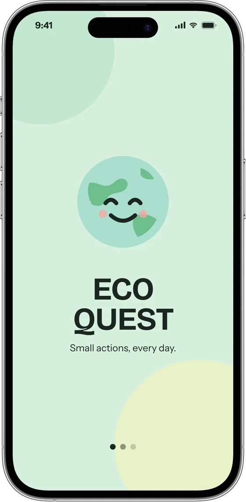
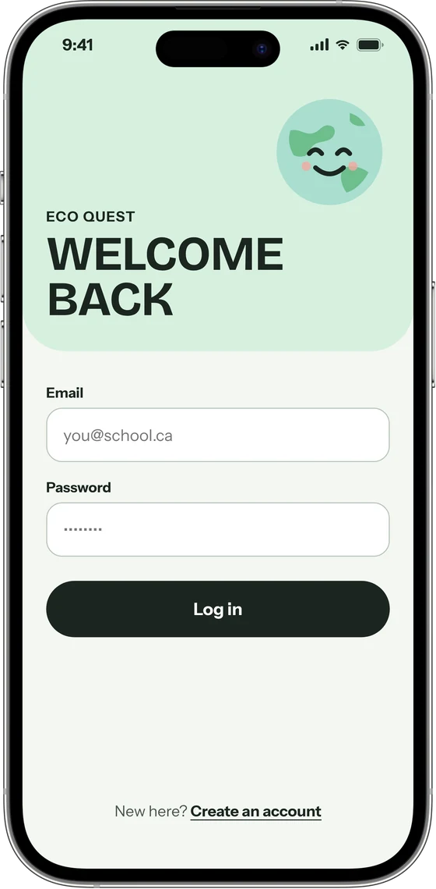
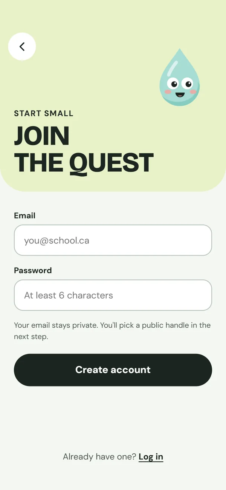
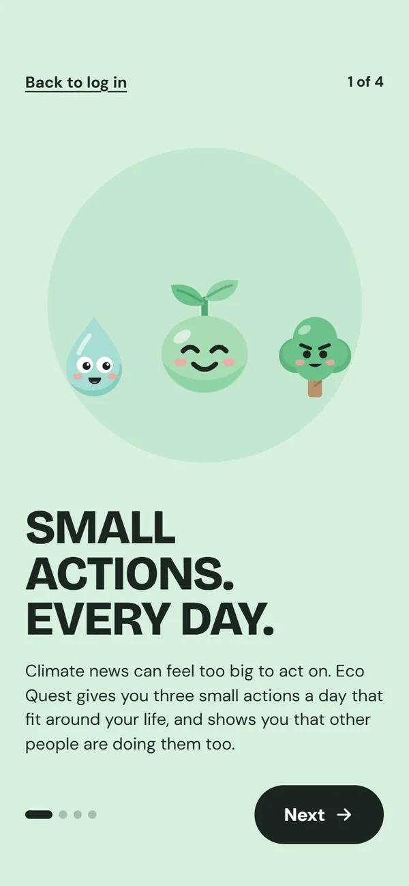
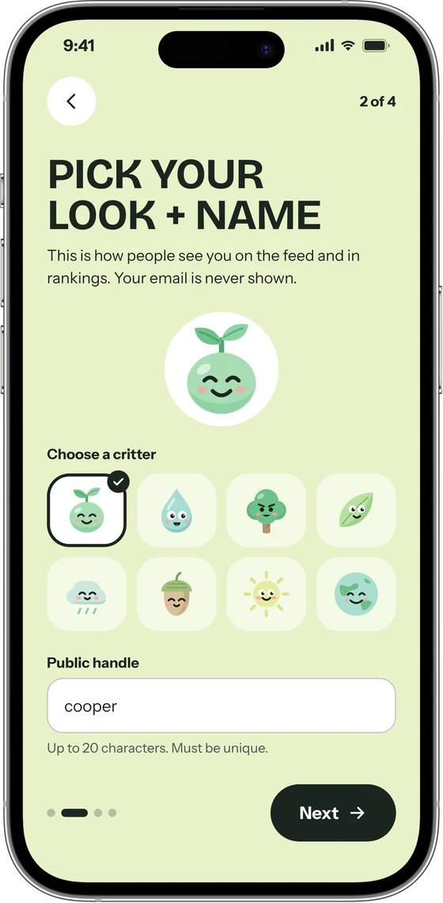
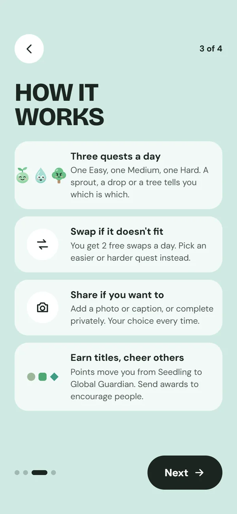
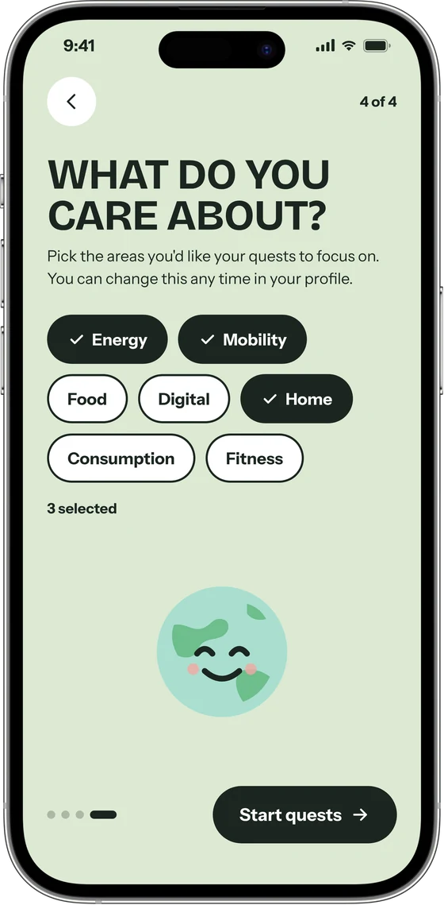
Daily quests
Three quests a day, swaps, and completing with a photo · 6 screens
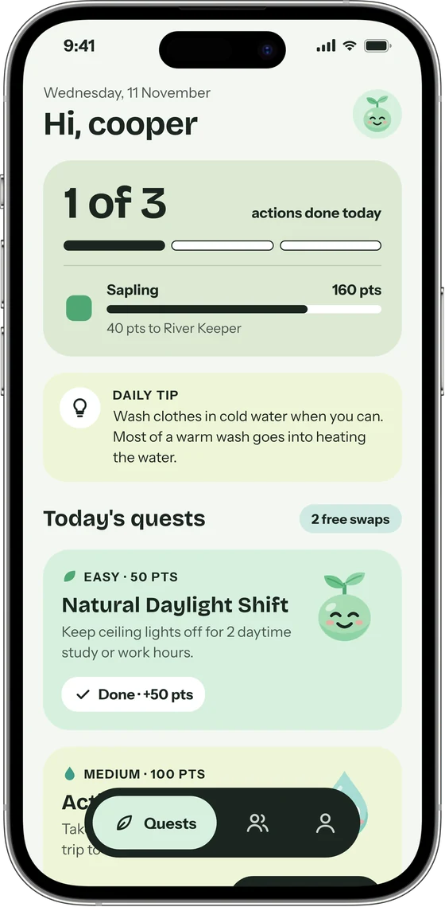
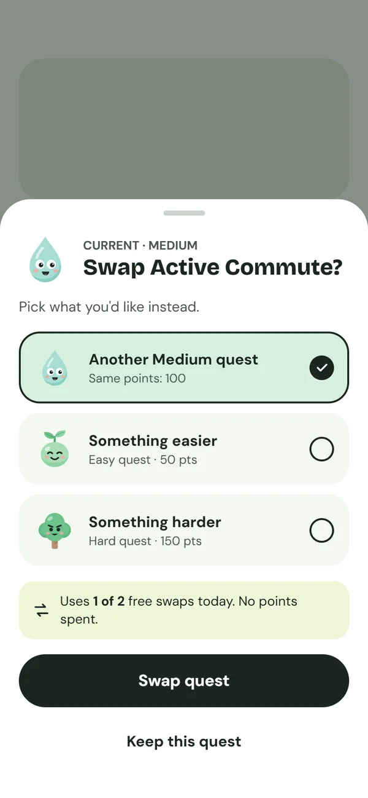
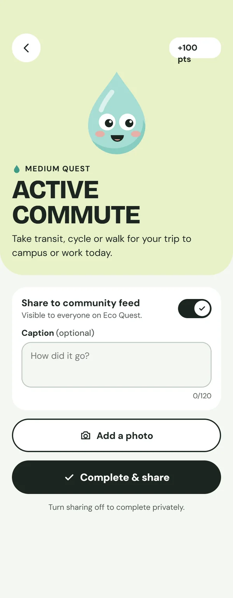
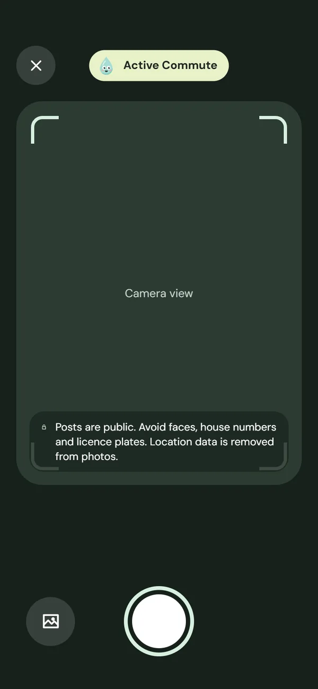
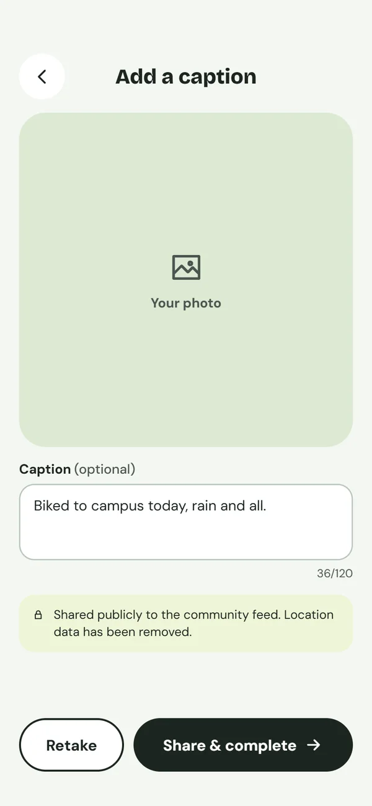
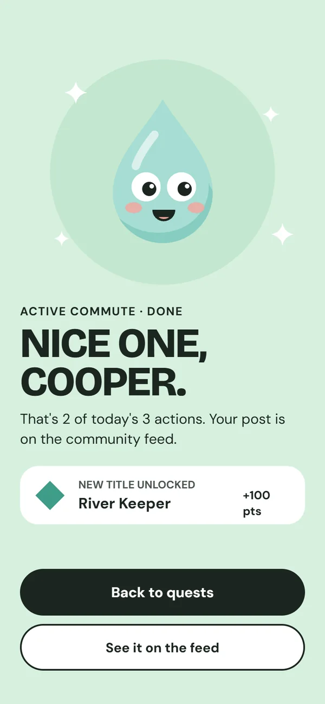
Community + profile
The feed, awards, fair rankings and your titles · 6 screens
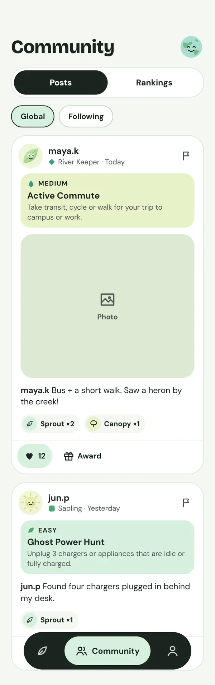
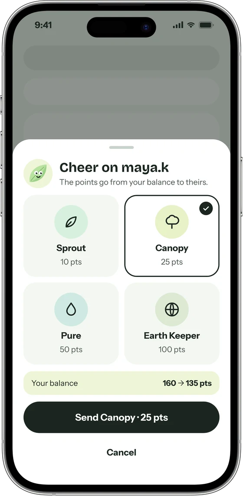
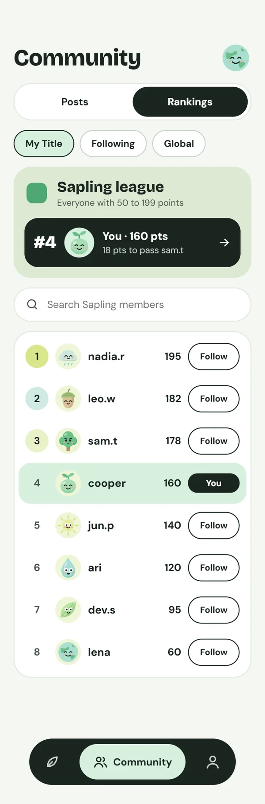
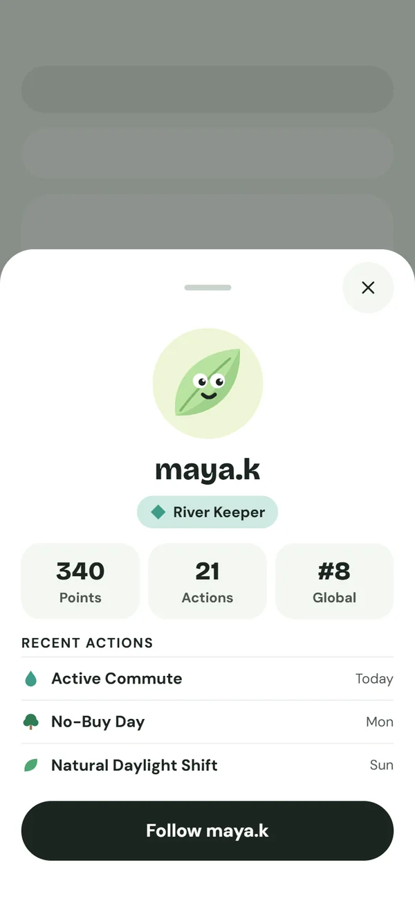
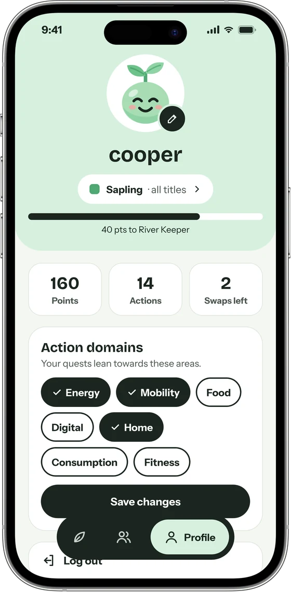
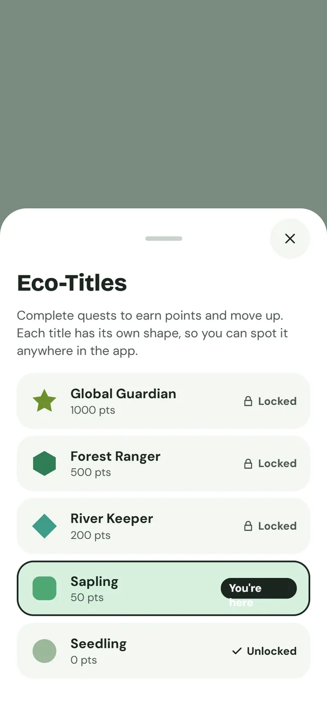
Students care about climate change but rarely act on it day to day. The problem feels too big, and most climate apps that use points and feedback have never been tested.
Make climate action small, social and doable: three quests a day (easy, medium, hard), a community feed, awards and fair rankings.
A fully working iOS and Android app, designed from HCI research and checked against my own design rationale.
Process
- 1Research
HCI literature on perception, motor control and cognition, plus studies on leaderboards, social visibility and motivation.
- 2Proposal and feedback
I reworked the proposal after feedback to focus on what makes the app unique: its multi-user community.
- 3Self-audit
I checked my first build against my own rationale and fixed four problems: low contrast, a mis-tap-prone swap button, hidden rankings, and difficulty shown only by colour.
- 4Redesign
A full redesign with an original mascot system, then a test plan for performance, social use and long-term motivation.
Decisions
A working iOS and Android app with 19 screens, 75 quests, a community feed, awards, rankings and offline support.
Final project · IAT 351A drawing-reference app that teaches beginners to see tone, turning any photo into flat light and dark planes you build up layer by layer.
- Directed by
- Coop
- Role
- Solo: concept, proposal, first version + scope
- Course
- IAT 460, Generative AI + Computational Creativity
- Tools
- Python, PyQt5, OpenCV, NumPy, scikit-learn, OpenGL, ComfyUI (Stable Diffusion)
Beginners copy a photo's details instead of its light and dark shapes, so their drawings look flat. Good reference photos for a specific subject, or a specific lighting setup, are also hard to find.
Turn any photo into 3 to 100 flat tonal planes and reveal them layer by layer, in the order you'd actually draw them.
I came up with the concept and proposal, and wrote the first version: the value-plane processing and main window, about 1,100 lines. I built the rest with Claude's help, tested it on my own machine and gave feedback throughout.
Process
- 1Core
Started with the heart of it: turn a photo into 3 to 100 flat tonal planes.
- 2Speed
Rewrote the processing for speed, running K-means on the grey histogram instead of every pixel.
- 3Tools
Added the tools around it: drawing aids, the Spatial Room and the Practice Room.
- 4Redesign
Redesigned the interface, with a Guide page and hover tips explaining every control.
- 5Test
Wrote 64 unit tests plus a benchmark, and tested on Windows with Python 3.14.
Decisions
A working desktop app with a Guide page and hover tips explaining every control, tested on Windows with Python 3.14.
Concept, first version and scope by me · built out with ClaudeI graduated from SFU's School of Interactive Arts & Technology with a BA. I moved between design, code, sound, 3D and AI, and every project went its own direction.
I'm happiest when I'm handed something I haven't done before and given time to learn it well. I'm looking for an entry-level role where I can be useful across a team.
Lower Mainland, BC · Open to Metro Vancouver, the Fraser Valley or remote